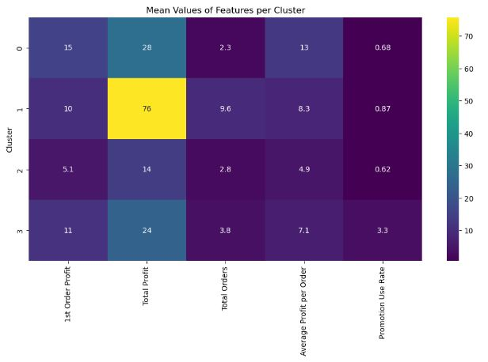
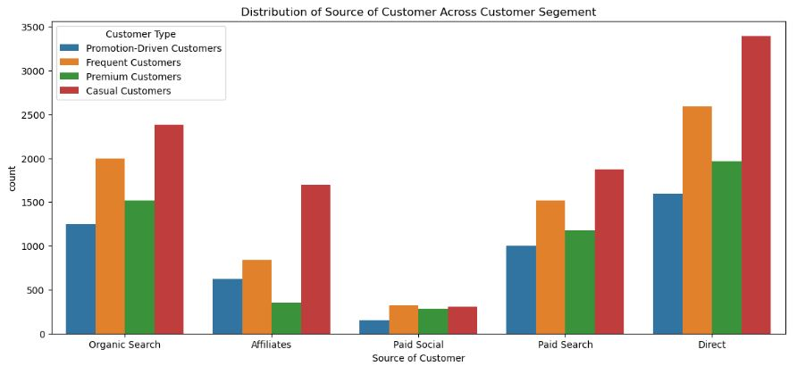
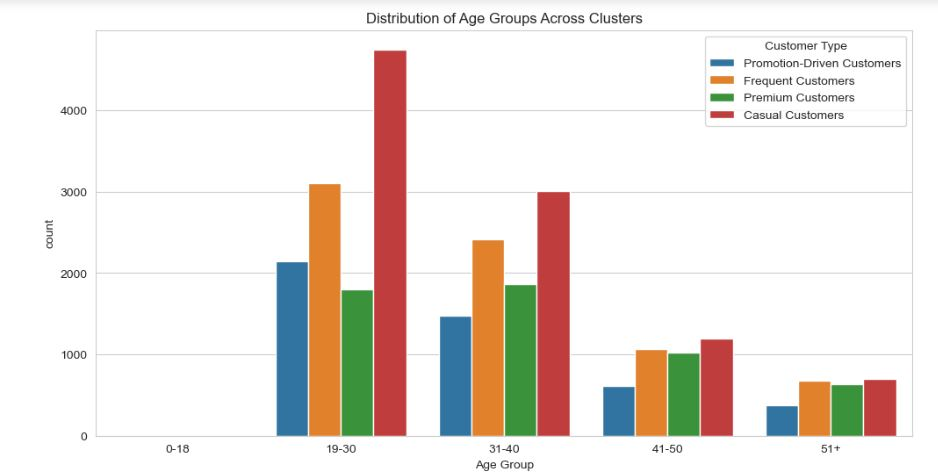
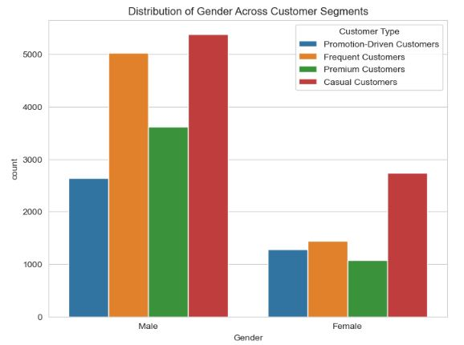
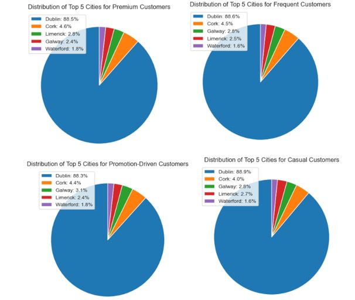
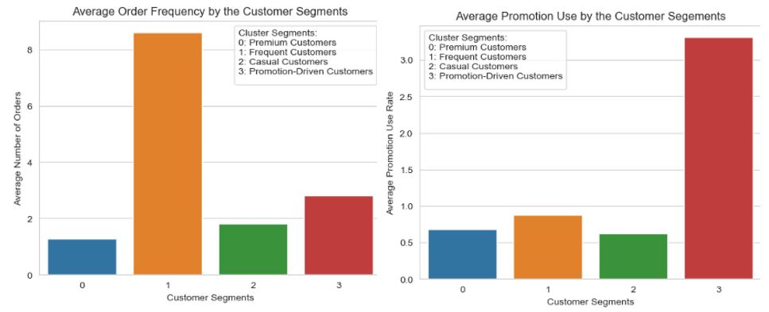
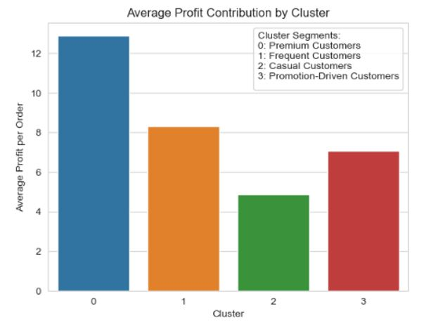

Men's Fashion Wear: Data Analytics Project
View Full Python Notebook on GitHub:
Introduction:
A men’s fashion wear company, is looking to optimize its profitability by analysing the efficiency of each of its marketing channels. Provided with two datasets – value_info and demographic_info – I performed an in-depth analysis of their marketing strategies and customer demographics to identify success stories and areas for improvement. The clear objective of this project was: to evaluate the efficiency of the company's marketing channels and to gain an understanding of its diverse customer base. This phase set the foundation for a targeted analysis focused on identifying areas for optimization and growth for the company.
Data Preparation
Data Import and Cleaning
- Checked for missing values across all columns.
- Checked the data types for all columns converted them to the relevant data types to facilitate accurate analysis.
- Ensured no duplicate rows existed within the datasets to maintain data integrity.
- Checked for the outliers in value_info to understand the data even more but removed the outliers during the clustering process so we don’t lose data here.
Data Integrity and Aggregation
- Checked for negative values for order counts and removed them and for promotion values as well where we understood that there are positive and negative values, the positive values indicates the loss and negative values here indicates the profit - if a customer hasn't availed the offers.
- Created 2 features here by data aggregation, TotalProfit and TotalOrders per customer, providing the total individual customer value to the company.
Customer Segmentation with K-means Clustering
- Developed new features such as Age, Age Group, Gender, Average Profit Per Order and Promotion Use Rate - to get more insights into customer behaviours while clustering.
- Checked for multicollinearity between the features by conducting Pearson's correlation test and removed the highly correlated features so the clustering is meaningful.
- Checked for outliers of the relevant (continuous data) features and removed them to maintain data quality and normalized the features before clustering for better results.
- Used Elbow Method to determine the number of clusters.

- Used K-means clustering to determine which customers belonged to one of the four clusters based on their purchasing behaviour.
Results
Customer Segmentation Insights
-
From the above heatmap we can understand:
- Cluster 0: Premium Customers - They are of high-value. They might not order frequently, but when they do, they contribute a significant profit.
- Cluster 1: Frequent Customers - They have the most number of orders and a high total profit, but their average order value is low.
- Cluster 2: Casual Customers - They have the lowest first order profit and average profit per order.
- Cluster 3: Promotion-Driven Customers - They have a moderate profit but high use of promotions.
Channel Performance Analysis
- Direct Channel: This was the most profitable channel suggesting that VogueVista has a loyal customer base and a well-established brand presence.
- Organic Search: This channel performs exceptionally well, indicating a good online presence.
- Paid Social: Initially, this channel starts slow in terms of 1st order profit but picks up for total profit and orders, attracting loyal customers over time.
- Paid Search: This channel demonstrated a balanced performance, with total profit being proportional to the total orders.
- Affiliates: Initially, affiliates showed good 1st order profit but then had a drop in total profit, indicating that this channel might not be performing as well in the long term.
These graphs offer a comparison of the profitability and customer activity within each channel. The Direct channel outperforms others in 1st order profit, total profit and total orders, indicating that it can attract and retain customers.
This distribution graph tells us the number of customers from each channel falling into the four identified clusters highlighting the Direct channel's dominance and the varying effectiveness of other channels across different customer segments.
Demographic Analysis
Age Group Distribution
The dataset primarily represented younger to middle-aged individuals. The 19-30 and 31-40 age groups were significantly represented, with Casual Customers having a strong presence (3,194 individuals in the 31-40 age group).
Gender Distribution
The analysis revealed a total of 6,538 female customers and 16,655 male customers. Notably, the female customer base was significant, even for a men’s fashion retailer. The largest segment for females was 'Casual Customers' (2,738), followed by 'Frequent Customers' (1,445).
Even though it's a men's fashion retailer, we can see nearly 30% of the overall customers are women who are shopping in this brand. The Gender Ratio in each segment are:
- Casual Customers: 66.3% Male and 33.7% Female
- Frequent Customers: 77.7% Male and 22.3% Female
- Premium Customers: 77.1% Male and 22.9% Female
- Promotion-Driven Customers: 67.4% Male and 32.6% Female
Noticed that the title column in Demographics_info has Mrs and Miss, which could categorize as married female customers and unmarried female customers. From the above, we can see a clear dominance of unmarried female customers across all customer segments. This could potentially mean that VougeVista could start a unisex fashion line to attract more female customers.
Geographic Distribution Analysis
Dublin was the dominant location, accounting for approximately 88% of customers across all segments. Cork consistently came in second place, with around 4% to 4.6% across the segments. Other locations like Limerick, Galway, and Waterford followed. This indicates where localized marketing efforts could be maximised.
Behavioural Analysis
The order frequency and promotion use graphs tell us about the purchasing patterns of each customer cluster. Frequent Customers show the highest order frequency, while Promotion-Driven Customers have the highest promotion use rate. The other segments have more or less the same use of promotions. This information can be used for cluster/segment targeted promotional strategies.
The average profit contribution graph highlights the value of each customer segment to VogueVista. Premium Customers provide the highest profit per order, reiterating the point that they are the key customers to target.
Strategic Recommendations
Channel Performance
- Organic Search: Investment in increasing the company's website visibility on search engines like Google and Microsoft Bing is recommended to attract more casual and frequent customers.
- Affiliates: Focus on building partnerships with affiliates who have a strong presence in the men's fashion industry, as they attract a significant number of casual customers.
- Paid Social: Although not the strongest channel initially, targeting premium customers through collaborations with fashion influencers on Instagram could yield substantial benefits.
- Paid Search: Ad placements should be optimized to attract casual and frequent customers, with a moderate focus on promotion-driven segments.
- Direct Channel: Introduce loyalty programs to ensure repeat business, especially targeting premium and frequent customers.
Demographic Recommendations
- Age-Focused Marketing: Products and promotions should be made to appeal to younger and middle-aged groups. Additionally, senior discount schemes could be introduced for the 51+ age group as a potential growth segment.
- Gender-Inclusive Fashion: Despite being a men's fashion retailer, the significant female customer base, especially unmarried female customers, suggests an opportunity to explore unisex fashion lines.
- Localized Marketing Strategies: In Dublin, where 88% of the customer base is located, customer segment-specific campaigns are recommended. Efforts should also be made to strengthen the brand's presence in Cork and explore potential markets in Limerick, Galway, and Waterford.
Customer Behavior Recommendations
- Engage Premium Customers: Offer exclusive deals and personalized recommendations to engage this high-value segment.
- Incentivize Frequent Customers: Encourage higher order values through bundling products and providing discounts.
- Motivate Casual Customers: Engage this segment through newsletters, personalized recommendations and incentives to encourage repeat purchases.
- Promote to Promotion-Driven Customers: Introduce tiered promotions and referral programs to capitalize on their promotional offers purchases.
Conclusion
This project provides a deep and comprehensive analysis of the company’s marketing strategies and customer demographics. The strategic recommendations with the data analysis performed are designed to guide the company in enhancing its profitability and market presence.